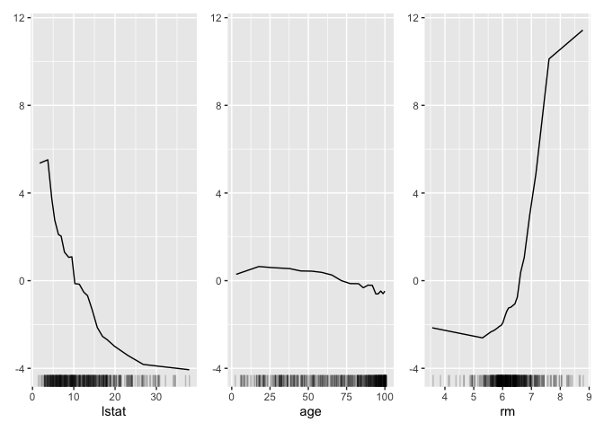

iml is an R package that interprets the behavior and explains predictions of machine learning models.  It implements model-agnostic interpretability methods - meaning they can be used with any machine learning model.
It implements model-agnostic interpretability methods - meaning they can be used with any machine learning model.
Features
- Feature importance
- Partial dependence plots
- Individual conditional expectation plots (ICE)
- Accumulated local effects
- Tree surrogate
- LocalModel: Local Interpretable Model-agnostic Explanations
- Shapley value for explaining single predictions
Read more about the methods in the Interpretable Machine Learning book.
Installation
The package can be installed directly from CRAN and the development version from GitHub:
# Stable version
install.packages("iml")
# Development version
remotes::install_github("christophM/iml")News
Changes of the packages can be accessed in the NEWS file.
Quickstart
First we train a Random Forest to predict the Boston median housing value. How does lstat influence the prediction individually and on average? (Accumulated local effects)
library("iml")
library("randomForest")
data("Boston", package = "MASS")
rf = randomForest(medv ~ ., data = Boston, ntree = 50)
X = Boston[which(names(Boston) != "medv")]
model = Predictor$new(rf, data = X, y = Boston$medv)
effect = FeatureEffects$new(model)
effect$plot(features = c("lstat", "age", "rm"))
Contribute
Please check the contribution guidelines
Citation
If you use iml in a scientific publication, please cite it as:
Molnar, Christoph, Giuseppe Casalicchio, and Bernd Bischl. "iml: An R package for interpretable machine learning." Journal of Open Source Software 3.26 (2018): 786.BibTeX:
License
© 2018 - 2020 Christoph Molnar
The contents of this repository are distributed under the MIT license. See below for details:
The MIT License (MIT)
Permission is hereby granted, free of charge, to any person obtaining a copy
of this software and associated documentation files (the "Software"), to deal
in the Software without restriction, including without limitation the rights
to use, copy, modify, merge, publish, distribute, sublicense, and/or sell
copies of the Software, and to permit persons to whom the Software is
furnished to do so, subject to the following conditions:
The above copyright notice and this permission notice shall be included in all
copies or substantial portions of the Software.
THE SOFTWARE IS PROVIDED "AS IS", WITHOUT WARRANTY OF ANY KIND, EXPRESS OR
IMPLIED, INCLUDING BUT NOT LIMITED TO THE WARRANTIES OF MERCHANTABILITY,
FITNESS FOR A PARTICULAR PURPOSE AND NONINFRINGEMENT. IN NO EVENT SHALL THE
AUTHORS OR COPYRIGHT HOLDERS BE LIABLE FOR ANY CLAIM, DAMAGES OR OTHER
LIABILITY, WHETHER IN AN ACTION OF CONTRACT, TORT OR OTHERWISE, ARISING FROM,
OUT OF OR IN CONNECTION WITH THE SOFTWARE OR THE USE OR OTHER DEALINGS IN THE
SOFTWARE.